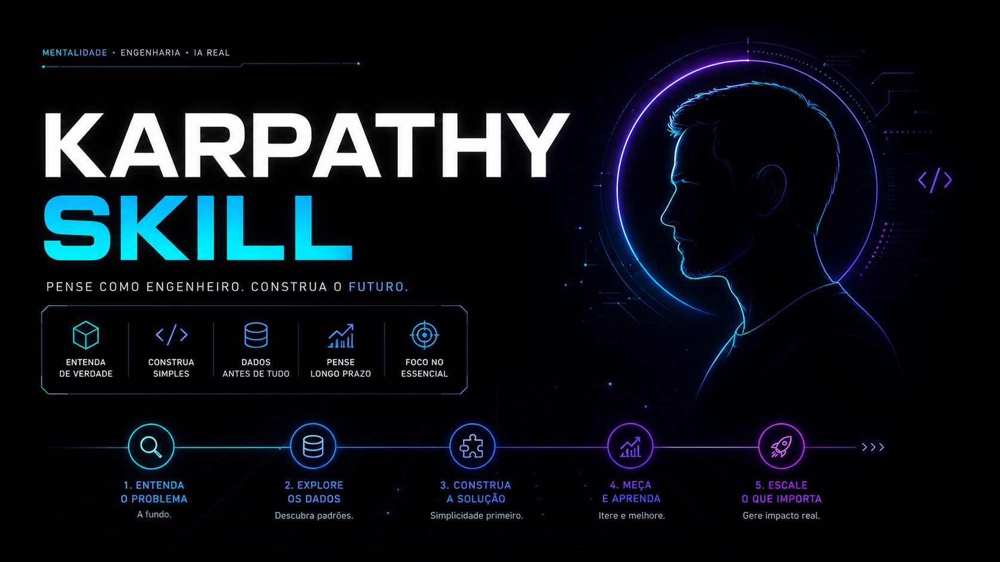
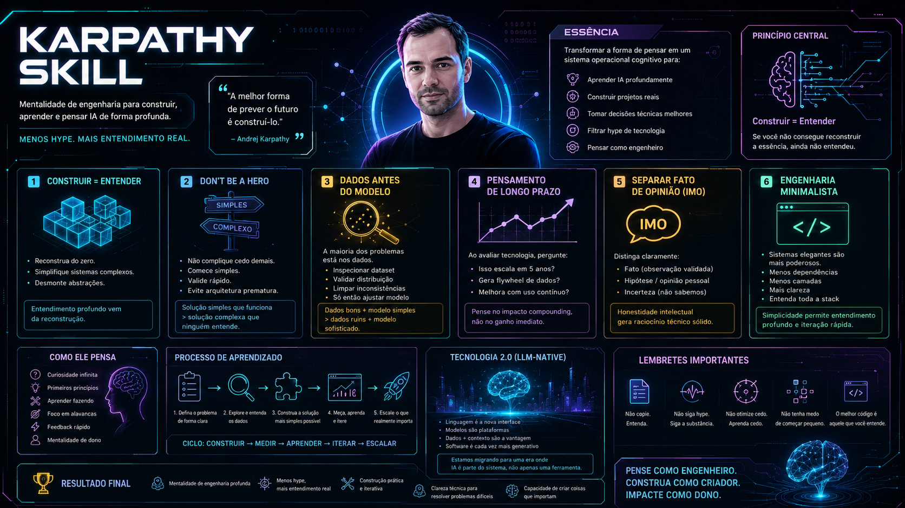

Quatro princípios para parar de brigar com seu LLM e começar a entregar código limpo.
Baseado nas observações de Andrej Karpathy sobre as falhas mais comuns de LLMs em programação — e como resolvê-las com um único CLAUDE.md.
Acabar com suposições silenciosas. Forçar o LLM a expor confusão, apresentar tradeoffs e discordar quando faz sentido.
Combater superengenharia. Código mínimo que resolve. Nada de abstrações inchadas ou flexibilidade que ninguém pediu.
Cada linha alterada deve rastrear ao pedido do usuário. Sem refactor disfarçado de bugfix. Sem mexer no estilo alheio.
Transformar instruções em critérios verificáveis. Deixar o LLM iterar sozinho até bater a meta, sem clarificações constantes.
Citando o próprio Karpathy:
"Os modelos fazem suposições erradas em seu nome e simplesmente seguem em frente sem checar. Não gerenciam confusão, não pedem esclarecimento, não apontam inconsistências, não discordam quando deveriam."
"Eles gostam muito de supercomplicar código e APIs, inchar abstrações, não limpar código morto... implementam uma construção inchada de 1000 linhas quando 100 bastariam."
"Eles às vezes alteram/removem comentários e código que não entendem suficientemente como efeito colateral, mesmo que ortogonal à tarefa."
Fundamentos Karpathy — os 4 princípios fundamentais
Um módulo profundo por princípio, com exemplos práticos
Conteúdo direto. Sem enrolação. Aplicação imediata.
Comece pela Trilha 1 e descubra como um único arquivo de regras pode transformar a forma como você programa com IA.
Iniciar Trilha 1 →